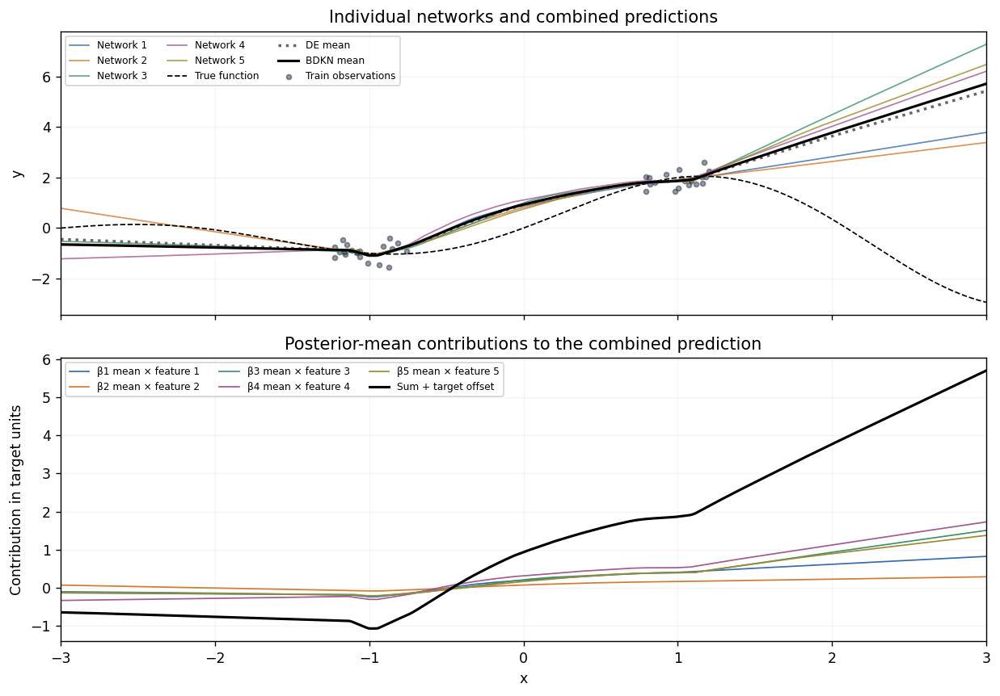
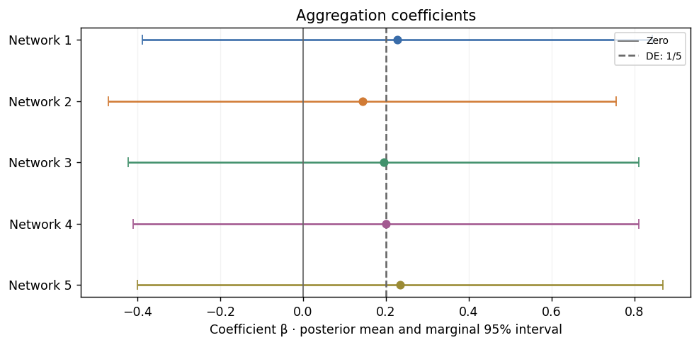
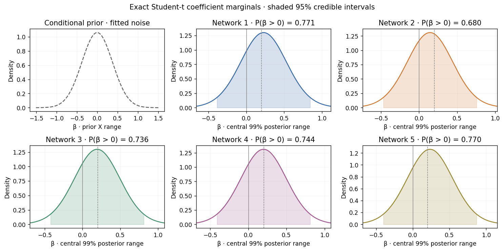
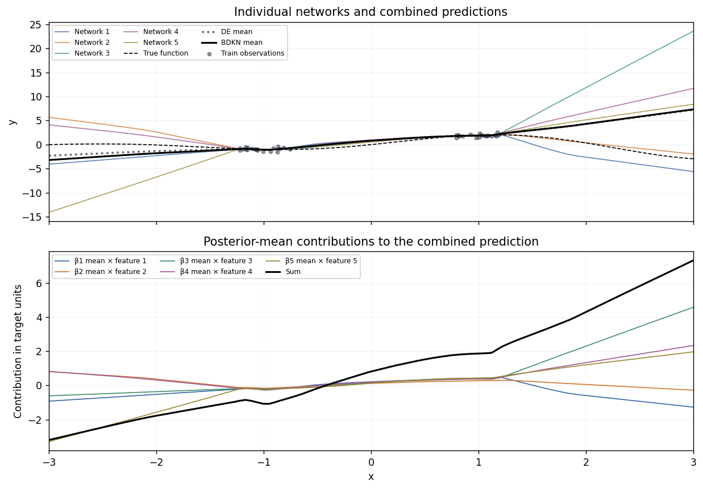
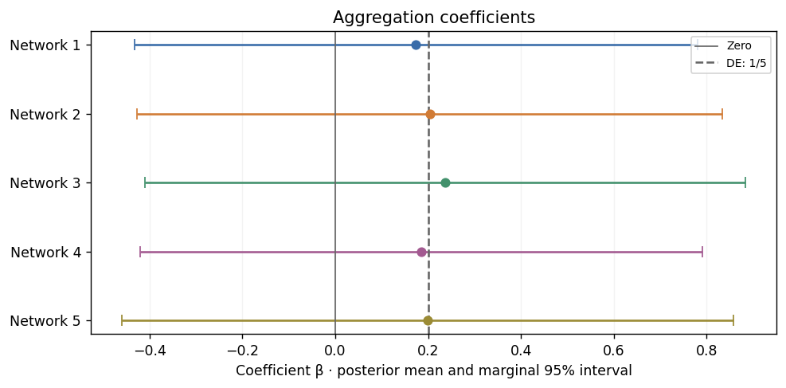
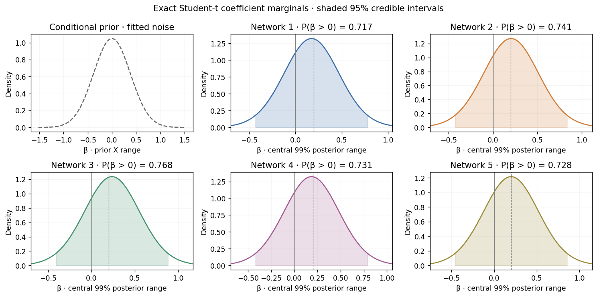
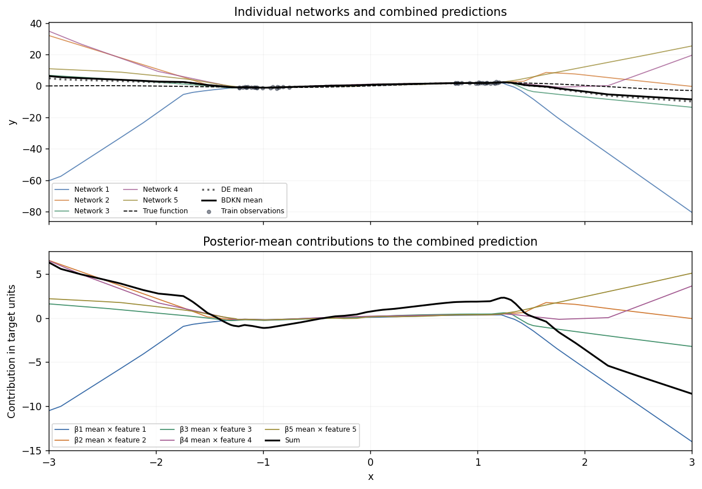
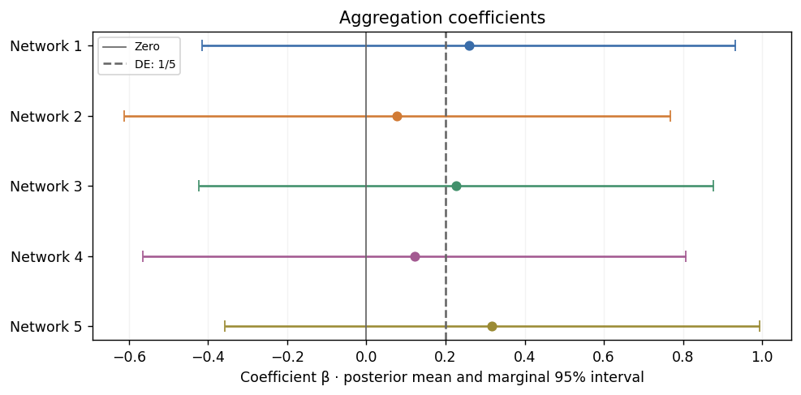
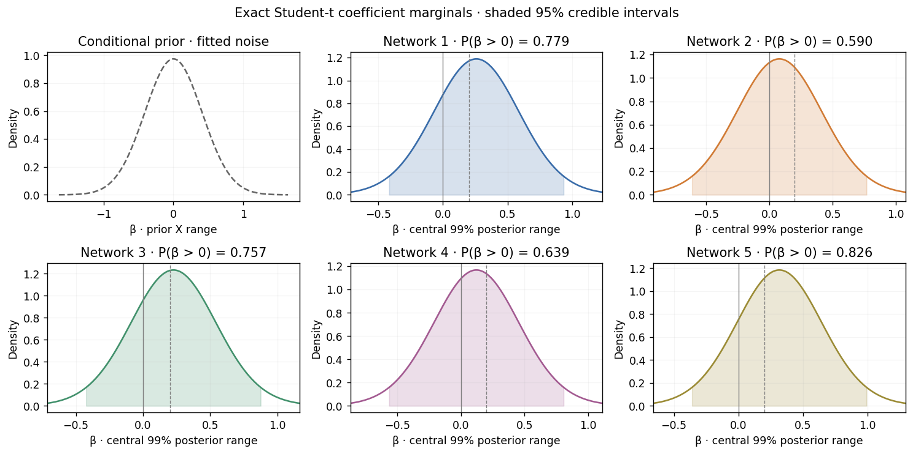
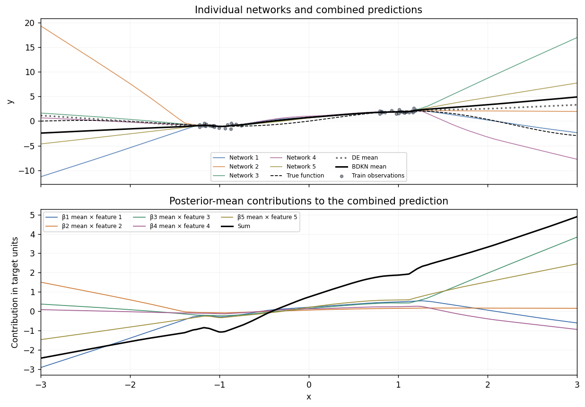

Regression comparison
Download resultsAggregation weights
Coefficients can be negative and need not sum to one. Intervals describe coefficient uncertainty; the dashed reference is DE’s fixed 1/H weight.
BDKN



Each density panel uses its own X range for readability; coefficient intervals above share a common axis. Prior reference conditions on fitted noise. Contribution shares use held-out inputs; test targets are used only for scoring.
| Network | β mean | 95% low | 95% high | P(β > 0) | Contribution share | Test RMSE | Test NLL |
|---|---|---|---|---|---|---|---|
| 1 | 0.21696 | -0.49120 | 0.92513 | 0.73035 | 0.17700 | 2.18420 | 209.95203 |
| 2 | 0.08393 | -0.61020 | 0.77806 | 0.59590 | 0.06140 | 2.03148 | 169.38755 |
| 3 | 0.20692 | -0.48031 | 0.89416 | 0.72686 | 0.23265 | 3.31554 | 985.68460 |
| 4 | 0.27844 | -0.40889 | 0.96578 | 0.79111 | 0.30558 | 3.01797 | 517.36540 |
| 5 | 0.21214 | -0.48923 | 0.91351 | 0.72777 | 0.22337 | 3.07438 | 730.92977 |
Functional repulsion · BDKN



Each density panel uses its own X range for readability; coefficient intervals above share a common axis. Prior reference conditions on fitted noise. Contribution shares use held-out inputs; test targets are used only for scoring.
| Network | β mean | 95% low | 95% high | P(β > 0) | Contribution share | Test RMSE | Test NLL |
|---|---|---|---|---|---|---|---|
| 1 | 0.22774 | -0.38745 | 0.84292 | 0.77064 | 0.13907 | 2.00048 | 79718.25023 |
| 2 | 0.14311 | -0.46895 | 0.75517 | 0.68045 | 0.06539 | 1.82732 | 1348.18427 |
| 3 | 0.19434 | -0.42241 | 0.81110 | 0.73607 | 0.30292 | 8.66340 | 1038.21314 |
| 4 | 0.20027 | -0.41059 | 0.81114 | 0.74431 | 0.19620 | 4.93167 | 9209.76298 |
| 5 | 0.23422 | -0.40043 | 0.86886 | 0.76995 | 0.29642 | 5.72546 | 6876.75397 |
Weight repulsion · BDKN



Each density panel uses its own X range for readability; coefficient intervals above share a common axis. Prior reference conditions on fitted noise. Contribution shares use held-out inputs; test targets are used only for scoring.
| Network | β mean | 95% low | 95% high | P(β > 0) | Contribution share | Test RMSE | Test NLL |
|---|---|---|---|---|---|---|---|
| 1 | 0.17379 | -0.43224 | 0.77981 | 0.71727 | 0.43192 | 29.64995 | 62642189.71486 |
| 2 | 0.20339 | -0.42722 | 0.83400 | 0.74089 | 0.14952 | 9.38121 | 2307.21350 |
| 3 | 0.23680 | -0.41007 | 0.88367 | 0.76815 | 0.11298 | 4.72080 | 621232.52122 |
| 4 | 0.18565 | -0.41971 | 0.79102 | 0.73056 | 0.13751 | 10.34998 | 26117838.55782 |
| 5 | 0.19944 | -0.45886 | 0.85774 | 0.72810 | 0.16808 | 9.80092 | 3117518.37332 |
First-order repulsion · BDKN



Each density panel uses its own X range for readability; coefficient intervals above share a common axis. Prior reference conditions on fitted noise. Contribution shares use held-out inputs; test targets are used only for scoring.
| Network | β mean | 95% low | 95% high | P(β > 0) | Contribution share | Test RMSE | Test NLL |
|---|---|---|---|---|---|---|---|
| 1 | 0.25848 | -0.41563 | 0.93258 | 0.77854 | 0.22201 | 3.54074 | 10496.71280 |
| 2 | 0.07793 | -0.61118 | 0.76703 | 0.58981 | 0.09584 | 5.80581 | 38856.29938 |
| 3 | 0.22642 | -0.42300 | 0.87584 | 0.75744 | 0.29244 | 6.40845 | 31933.85881 |
| 4 | 0.12181 | -0.56408 | 0.80769 | 0.63923 | 0.07555 | 2.00374 | 19.44917 |
| 5 | 0.31764 | -0.35879 | 0.99408 | 0.82586 | 0.31415 | 3.79414 | 5012.22062 |